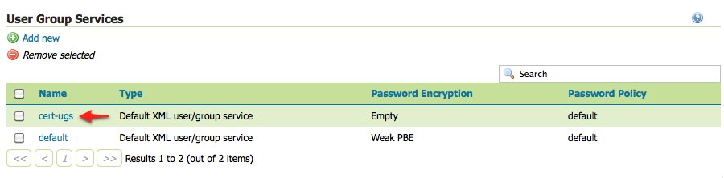
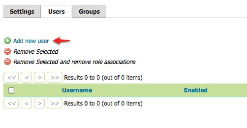
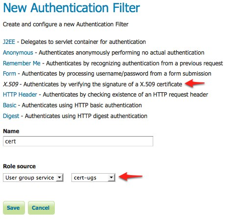
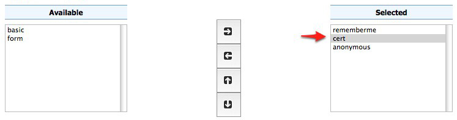
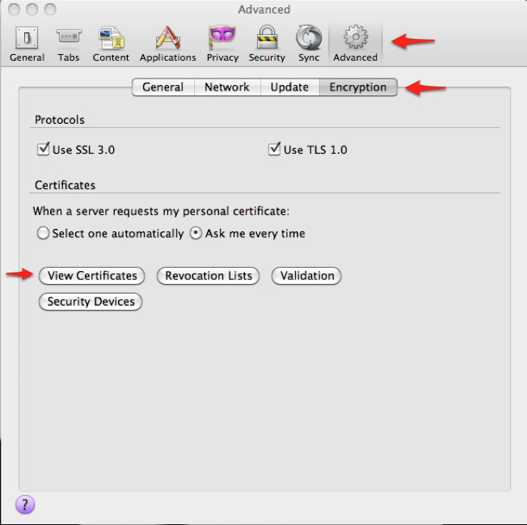
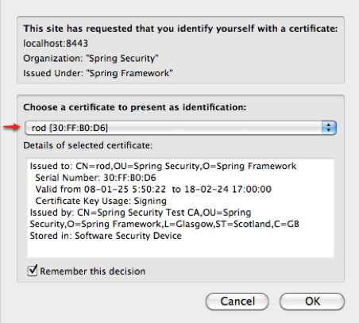
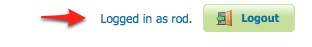

Configuring X.509 Certificate Authentication¶
Certificate authentication involves the usage of public/private keys to identify oneself. This represents a much more secure alternative to basic user name and password schemes.
X.509 is a well defined standard for the format of public key certificates. This tutorial walks through the process of setting up X.509 certificate authentication.
Prerequisites¶
This tutorial assumes the following:
A web browser that supports the usage of client certificates for authentication, also referred to as “two-way SSL”. This tutorial uses Firefox.
An SSL-capable servlet container. This tutorial uses Tomcat.
GeoServer is deployed in Tomcat.
Configure the user/group service¶
Users authenticated via a X.509 certificate must be configured in GeoServer. For this a new user/group service will be added.
Login to the web admin interface as the
adminuser.Click the
Users, Groups, and Roleslink located under theSecuritysection of the navigation sidebar.
Scroll down to the
User Group Servicespanel and click theAdd newlink.Create a new user/group service named cert-ugs and fill out the settings form as follows:
Set Password encryption to Empty since users will not authenticate via password.
Set Password policy to default.

Click Save.
Back on the
Users, Groups, and Rolespage, click the cert-ugs link.Select the Users tab and click the Add new user link.
Add a new user named rod the and assign the
ADMINrole.Click Save.
Click the Authentication link located under the Security section of the navigation sidebar.
Scroll down to the Authentication Filters panel and click the Add new link.

Click the X.509 link and fill out form as follows:
Set Name to “cert”
Set Role source to User group service and set the associated drop-down to cert-ugs
Click Save.
Back on the authentication page, scroll down to the Filter Chains panel.
Click web in the Name column.
Select the cert filter and position it after the rememberme filter.
Click Close.
You will be returned to the previous page. Click Save.
Warning
This last change requires both Close and then Save to be clicked. You may wish to return to the web dialog to verify that the change was made.
Download sample certificate files¶
Rather than demonstrate how to create or obtain valid certificates, which is beyond the scope of this tutorial, sample files available as part of the spring security sample applications will be used.
Download and unpack the sample certificate files. This archive contains the following files:
ca.pemis the certificate authority (CA) certificate issued by the “Spring Security Test CA” certificate authority. This file is used to sign the server and client certificates.server.jksis the Java keystore containing the server certificate and private key used by Tomcat and presented to the user during the setup of the SSL connection.rod.p12contains the client certificate / key combination used to perform client authentication via the web browser.
Configure Tomcat for SSL¶
Copy the
server.jksfile into theconfdirectory under the root of the Tomcat installation.Edit the Tomcat
conf/server.xmland add an SSL connector:<Connector port="8443" protocol="HTTP/1.1" SSLEnabled="true" scheme="https" secure="true" clientAuth="true" sslProtocol="TLS" keystoreFile="${catalina.home}/conf/server.jks" keystoreType="JKS" keystorePass="password" truststoreFile="${catalina.home}/conf/server.jks" truststoreType="JKS" truststorePass="password" />
This enables SSL on port 8443.
By default, Tomcat has APR enabled. To disable it so the above configuration can work, remove or comment out the following line in the server.xml configration file
<Listener className="org.apache.catalina.core.AprLifecycleListener" SSLEngine="on" />
Restart Tomcat.
Install the client certificate¶
In Firefox, select Preferences (or ) and navigate to the Advanced panel.
Select the Encryption tab (or the Certificates tab, depending on your version) and click the View Certificates button.
On the Your Certificates panel click the Import button and select the
rod.p12file.When prompted enter in the password password.

Click OK and close the Firefox Preferences.
Test certificate login¶
Navigate to the GeoServer admin on port “8443” using HTTPS: https://localhost:8443/geoserver/web
You will be prompted for a certificate. Select the rod certificate for identification.
When warned about the self-signed server certificate, click Add Excception to add a security exception.

The result is that the user rod is now logged into the GeoServer admin interface.

Note
Starting with version 31, Firefox implements a new mechanism for using certificates, which will cause a Issuer certificate is invalid error (sec_error_ca_cert_invalid) error when trying to use a self-signed repository such as the one proposed. To avoid that, you can disable this mechanism by browsing to about:config and setting the security.use_mozillapkix_verification parameter to false.